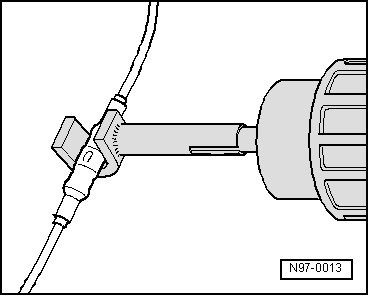

Vehicle Electrical System
Vehicle Electrical System
CAUTION!
When disconnecting and connecting battery, the procedure must be followed as described in the Repair information.
CAUTION!
Some tools are supplied with a tool safety clip, which is slid over the tool points after using the tool, in order to protect other workers from injuries and tool points from damage.
• Observe the current notes in the corresponding Repair information for all repairs.
• Observe country-specific regulations.
• Before working on electrical system, battery ground (GND) strap must be disconnected. By disconnecting the battery ground (GND) strap (current disruption), the electrical system is guaranteed to be safe to work on. Disconnection of the battery positive terminal is only required for removal of the battery.
• Before starting a repair, the cause of the damage must be eliminated first, e.g. sharp edges on chassis parts, faulty consumers, corrosion etc.
• Further information, e.g. installing and removing the individual components can be found in the appropriate Repair information.
• Soldering is not permissible for repairs to the vehicle electrical system.
• Wiring harness and connector repairs to vehicle electrical system must only be performed using Wiring Harness Repair Kit (VAS 1978) or Wiring Harness Repair Set (VAS 1978A). Use only the yellow cables taken from the Wiring Harness Repair Set (VAS 1978) or Wire Harness Repair Kit (VAS 1978A).
• Wiring harness repairs may not be performed again in the wrapping of the vehicle-specific wiring harness and are to be marked with yellow adhesive tape. This indicated a previous repair.
• Crimp connections must never be repaired. If necessary, lay a wire parallel to the faulty wire. After crimping, they must be heat-shrunk using hot air gun to prevent moisture penetration.

• Always observe also the supplementary notes for repairing wiring harnesses on airbag- and seat belt tensioner systems, fiber optic cables, CAN-Bus wires, antenna wires and wire cross-sections up to 0.35 mm.
• A function test must be performed after every repair. If necessary, check DTC memory, erase and/or bring systems into basic setting.
• If possible, do not loosen grounding straps from the body (danger of corrosion).
• Not all the wire cross-sections installed in the vehicle are contained in the Wiring Harness Repair Kit (VAS 1978) or Wiring Harness Repair Set (VAS 1978A). If the required wire cross-section is not present, the next greater cross-section must be used.
• Shielded harnesses may not be repaired. If faulty, the entire harness must be replaced.
• Heat-resistant wires have been installed in the vehicle at various locations, mainly in the engine compartment. Heat-resistant wires can be recognized by their somewhat duller and softer insulation. Only heat-resistant wires may be used to repair these wires.